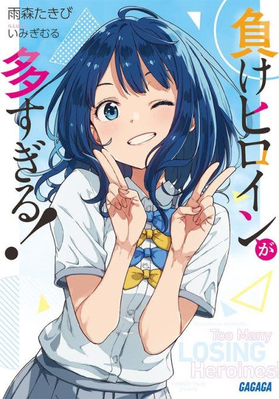

Makeine: Too Many Losing Heroines!
負けヒロインが多すぎる！
After the anime, read the light novel from Volume 4.
8.0AniList score
—Animeter, no votes yet
12episodes
Anime finished. Where does the story go next?
Start at Volume4
The anime ends at the end of light novel volume 3; start at volume 4.
13ongoing
Makeine: Too Many Losing Heroines!Start reading here